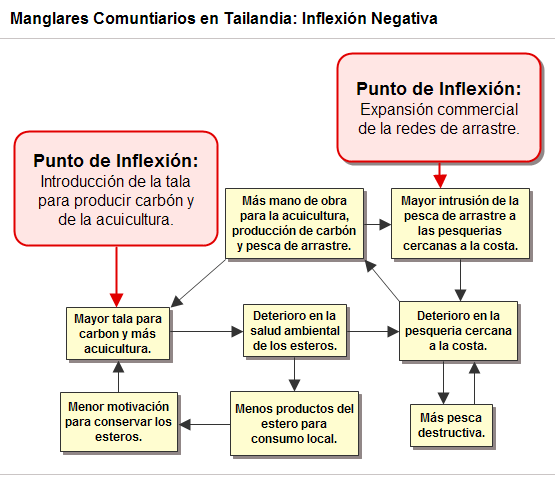
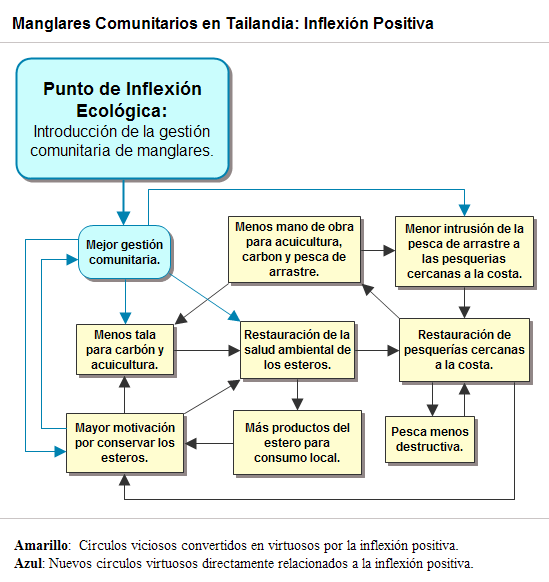

|
 |
 |
Puntos de
Inflexión Ecológica
- Cómo funcionan?
- Transformando círculos viciosos a círculos virtuosos
- Ingredientes para el éxito
- Elaboren sus propios Puntos de Inflexión Ecológica
Historias por Región
Historias por Tema
- Agricultura
- Agua y Cuencas
- Bosques
- Ecosistemas Urbanos
- Educación
- Energía
- Negocios
- Pesquerías
- Salud Pública
Videos Cortos
- Salvando un arrecife coral y una pesquería
(Filipinas) - Revitalizando vecindades urbanas con jardines comunitarios
(Nueva York) - Revirtiendo la deforestación tropical con bosques comunitarios
(Thailandia) - Rellenando aguas subterráneas con captación pluvial
(Rajastán, India) - Escapando la trampa de pesticidas
(India)
Explicando el Éxito
- Salvando un arrecife coral y una pesquería
(Filipinas) - Revitalizando vecindades urbanas con jardines comunitarios
(Nueva York) - Revirtiendo la deforestación tropical con bosques comunitarios
(Thailandia) - Rellenando aguas subterráneas con captación pluvial
(Rajastán, India) - Escapando la trampa de pesticidas
(India)

Ecología Humana: Presenta los principios de la ecología humana que sirven de fundamento a los Puntos de Inflexión Ecológica
Tailandia - Provincia Trang – Yadfon: Recobrando los Manglares con Gestión Comunitaria
- Autores: Amanda Suutari y Gerry Marten
- Aportaciones editoriales: Ann Marten
- Informe completo de esta historia (Inglés): Amanda Suutari
- Fotogalería de esta historia
- Esta historia se publicó en Puntos de Inflexión Ecológica: Como un Círculo Vicioso puede volverse Virtuoso (Earth Island Journal)
Hace tres décadas los recursos de las aldeas pesquera de la costa de la provincia Trang eran atacados por todos lados, desde botes pesqueros de arrastre que invadían sus aguas, hasta concesionarias carboneras que talaban sus manglares. Al caer la captura, la desesperación llevo a los pescadores a impactar aún más su pesquería al adoptar métodos destructivos de pesca, unirse a la tripulación de los botes de arrastre, o talar el mangle que quedaba. Yadfon, una pequeña organización de desarrollo, comenzó a trabajar con aldeanos para proteger los manglares restantes, lo cual detonó una regeneración de su sociedad, su economía y su pesquería.
Las cigarras cantan a todo volumen una mañana cargada de Mayo mientras avanzamos sobre un desvencijado paseo entablado tendido entre un manglar comunitario cerca de la aldea de Thung Dase en el sur de Tailandia. Los mangles ofrecen su sombra cerca del muelle donde está amarrado un pequeño bote. Hay trampas de bambú tendidas para atrapar cangrejos al bajar la marea. En un destello anaranjado y turquesa, un martín pescador desciende a una rama baja.
Es difícil imaginar que hace tres décadas la exuberante abundancia de la región se colapsaba en un páramo. "En otro tiempo," recuerda Nom Ham Yak, presidente del comité de gestión del manglar, "nuestra base económica eran los cangrejos, la pesquería y el hule. Luego se rentaron predios en concesión a contratistas privados para la producción de carbón vegetal, y el bosque fue severamente degradado."
Los prospectos para las aldeas de la región eran tan sombríos que una renovación hubiera parecido fantasía. Lo que las regresó del borde del abismo fue un Punto de Inflexión Ecológica.
Los Puntos de Inflexión Ecológica nos ofrecen un nuevo paradigma para restaurar nuestras comunidades, tanto naturales como humanas. El enfoque convencional a la problemática ambiental – desde el micro-manejo poco sistemático, soluciones tecnológicas, y reglamentación impuesta desde arriba – comúnmente fracasa o genera nuevos problemas. Pero los Puntos de Inflexión Ecológica demuestran como las mismas fuerzas que amenazan a ecosistemas y comunidades pueden aprovecharse para sanar a los mismos. Para demostrar que son los Puntos de Inflexión Ecológica y cómo funcionan, consideremos dos historias muy distintas en dos continentes: los manglares de la provincia Trang y los humedales costeros de Arcata, en California.
Del carbón al oro rosado
Ochocientos sesenta kilómetros al sur de Bangkok, la provincia Trang está ubicada en la costa sudoeste de Tailandia, en la orilla poniente del Mar de Andamán. Thung Dase y sus aldeas vecinas se encuentran en la cuenca de los ríos Palian y Trang, los cuales bajan al mar desde la sierra de Bandthad. Las aldeas están agrupadas a lo largo de los manglares costeros, que ofrecen una fértil zona de amortiguación entre la vida marina y terrestre. Además de ofrecer una rica diversidad de alimentos, los manglares proporcionan plantas medicinales y materiales para la construcción y pesca. También son refugio y criadero de peces juveniles, cangrejos, camarones y moluscos.
Los grandes cambios se dieron en los 1960s, cuando el gobierno tailandés adoptó el modelo Occidental del desarrollo en base a exportaciones. Los pesqueros industriales de arrastre violaron impunemente la zona de veda a 3 Km. de la costa. Arrasaron con el lecho marino y los arrecifes coralinos, devorando las reservas pesqueras antes de que estas pudieran regenerarse. Al desvanecer la pesquería costera, los pescadores pasaron más horas en sus embarcaciones y viajaron cada vez más lejos de la costa. Algunos utilizaron explosivos o venenos para capturar los peces que quedaban, o invirtieron en mejor equipo de pesca – causando que las reservas se colapsaran aún más pronto.
Mientras tanto, el gobierno había otorgado concesiones de manglares al sector privado para la producción de carbón vegetal. Al menguarse los manglares, lo mismo sucedió con la diversidad de productos útiles que brindaban. "Escasearon las plantas y animales, particularmente los cangrejos," explica Nom Ham Yak.
Con opciones cada vez más limitadas, los pescadores comenzaron a aceptar trabajos básicos cortando mangle para carbón, o trabajando en los pesqueros de arrastre, o migraron a las ciudades a buscar trabajo. "Los ingresos pesqueros disminuyeron," dice Ham Yak. "Los aldeanos tuvieron que mudarse en busca de empleos en las fábricas enlatadoras de mariscos, en las plantaciones de hule, en la construcción o como jornaleros. Cuando los hombres salían a trabajar y sus esposas permanecían en la aldea, las relaciones familiares sufrieron. La gente también comenzó a vender sus terrenos por no haber trabajo en esos tiempos."
Empeorando las cosas, las agencias de desarrollo y los bancos habían comenzado a promocionar la acuicultura de camarones en los manglares. Lamentablemente el "oro rosado" de la acuicultura de camarones puede ser una empresa clásica de expansión y contracción en que la producción de los estanques decae drásticamente después de los primeros cinco años. Los lugareños pronto vieron como sus ganancias rápidas fueron reemplazadas por deudas y desolación ambiental al multiplicarse los estanques abandonados.
En 1999 un equipo dirigido por el economista Suthawan Sathirathai hizo un análisis del costo-beneficio de la acuicultura de camarones en la aldea costera en la provincia de Surathani, en el sur de Tailandia, para comparar el valor monetario de los manglares contra el de las granjas piscicultoras. Al tomar en cuenta únicamente los productos de mercado, la acuicultura dio mayor rendimiento, con un valor neto de US$9,335 por acre, comparado con el valor de US$1,665 de los manglares. Pero al calcular el valor indirecto de los manglares estos números se invirtieron de manera dramática. Al asignarse un valor monetario a los servicios ambientales del manglar como criadero de peces y la protección que brinda de erosión y tormentas, el valor de los manglares subió a US14,428, más de 50% mayor al valor de la acuicultura.
La inflexión positiva
Como estudiantes universitarios, Pisit Charnsnoh y su esposa Ploeniai, fueron parte de una generación de activistas pro-democracia. Tras graduarse de la Universidad Khon Khaen, Charnsnoh se involucró en los temas de desarrollo rural y derechos laborales. En 1985 la pareja se mudó al pueblo de Ploenjai en la provincia de Trang, donde comenzaron una pequeña organización de nombre Yadfon (que en tailandés significa "gota de lluvia"), dedicada a apoyar a aldeas costeras de la región. En ese entonces, los residentes de la provincia Trang se encontraban inmersos en un círculo vicioso de pobreza, enajenamiento social y degradación ambiental.
Los miembros de Yadfon dedicaron casi un año al diálogo con los aldeanos de Ban Leam Makham, esforzándose por ganarse su confianza. Su enfoque fue apoyar el entendimiento de los propios lugareños con respecto a la crisis que compartían. Charsnoh nos explica que este método fue mucho más poderoso que simplemente sermonear a los aldeanos. "No podíamos entrar desde fuera y decirles 'Está desapareciendo tal especie, tienen que ser más cuidadosos' o 'Tienen que proteger el manglar'" Con el tiempo, y con éxitos en otros proyectos de micro-créditos, perforación de pozos y demás, Yadfon comenzó a ganarse el respeto de los aldeanos.
Tras una serie de reuniones con Yadfon, los aldeanos desarrollaron la idea de restaurar el muy degradado manglar cercano a Ban Leam Markhamand y Ban Thung Dase. Ya que la tierra estaba bajo control gubernamental, el personal de Yadfon actuó como intermediario para obtener los permisos de las autoridades provinciales para crear un manglar comunitario. Fue el primero de su tipo en Tailandia, y cubrió 38 hectáreas. Después formó parte de una zona de conservación de 91 hectáreas con manglar y pastos marinos.
Una emergente red inter-aldea creó un sistema para gestionar el manglar. Se permitió el uso de algunas áreas para obtener el apoyo de una comunidad que hubiera roto las reglas de haberse prohibido totalmente el uso. Se prohibió la acuicultura de camarón dentro del manglar, se establecieron zonas de veda pesquera, se abatió el uso de cianuro y dinamita y se prohibió el uso de redes de arrastre. Se replantaron algunas zonas del manglar y designaron otras como intocables, para permitir la regeneración natural. La red también comenzó a replantar pasto marino en los lechos marinos junto a la aldea de Chao Mai.
Sus esfuerzos dieron fruto. Hubo un aumento en la captura de peces cerca a la orilla, y una especie que se daba por desaparecida, regresó. Estos resultados tempranos aumentaron el compromiso de los aldeanos y los motivaron a tomar más acciones. Se detectó un dugong (especie de manatí amenazada) cerca de la aldea de Chao Mai lo cual facilitó el apoyo del gobierno a favor de la protección de los pastos marinos; el dugong se convirtió en el símbolo viviente de los avances conservacionistas en la zona.
Círculos retroalimentaros y puntos de inflexión
La creación del manglar comunitario fue un Punto de Inflexión Ecológica. Impulsó a la comunidad local y su medio ambiente de un círculo vicioso a un círculo virtuoso, y la inercia dejó de ser destructiva para ser regeneradora.
Los círculos viciosos y virtuosos son 'circuitos de retroalimentación'. Estos circuitos mutuamente reforzadores de causas y efectos son el corazón de los Puntos de Inflexión Ecológica. En la inflexión negativa, al talarse el manglar, las pesquerías decayeron. Al caer las reservas de peces, los pescadores tuvieron que trabajar más arduamente, lo cual aceleró la merma de las reservas de peces aún más. De esta manera, se vieron involucrados en un círculo vicioso de recursos en picada y una carrera por aprovechar lo poco que quedaba.
Tras la inflexión positiva, la pesquería comenzó a regenerarse. Según un estudio de 500 familias realizado entre 1991 y 1994, la captura total aumentó en un 40%. Los pescadores trabajaron entre 3 y 4 horas menos sobre el agua, mientras que sus ingresos aumentaron en un 200 por ciento. Pudieron regresar con sus botes llenos sin utilizar dinamita o redes de arrastre. En este círculo virtuoso, la disminución de la presión por parte de los pescadores permitió que las reservas de peces se recuperaran más rápidamente, con lo cual la labor del pescador se hizo más fácil.
La resurrección de la pesquería generó otros círculos virtuosos. Con mayores ingresos no hubo necesidad de abandonar las aldeas. En vez de estar amarrados al deterioro, los aldeanos ahora están comprometidos con la conservación., ya que el incentivo financiero para preservar el manglar es superior al incentivo para su destrucción.
Y lo más importante es que, al invertir en su propio futuro se motivó a que la gente luchara por preservarlo. El sentido de posesión les dio las agallas y confianza para enfrentarse a los pesqueros de arrastre y cabildear al gobierno para vigilar la zona de veda de 3 kilómetros. También los hizo menos susceptibles a vender sus tierras, las cuales frecuentemente eran usadas para desarrollos turísticos. Al revivir los manglares se limitaron y zonificaron los estanques de camarones. Charnsnoh explica que aunque muchas de las aldeas tienen estos estanques, los mantienen fuera de los límites del manglar.
Mientras que el concepto del manglar comunitario comenzó modestamente, los círculos virtuosos se han expandido con el tiempo. Actualmente en estos distritos hay 10 manglares comunitarios y cuatro áreas de conservación de pastos marinos y dugong, con una superficie total de 130 kilómetros cuadrados. Mientras tanto, Yadfon se ha involucrado con 60 aldeas en tres distritos. A través de una red creciente de organizaciones de base, Charnsnoh ayuda a influenciar políticas a nivel nacional e internacional, cabildeando por la protección legal de los manglares, y organizando fuerzas para abatir la práctica intensa de la acuicultura de camarones. Ploenjai trabaja con aldeas del interior, descubriendo los lazos entre esta región y la costera. "Trabajé con los pescadores desde el principio" dice ella, "y ahora he incursionado cuenca arriba. Ahora trabajamos con todo el ecosistema."
Referencias
- Barbier, Edward B. And Suthawan Sathirathai. Shrimp Farming and Mangrove Loss in Thailand. Edward Elgar Publishing Ltd., UK, 2004.
- Martinez-Alier, Joan. “Ecological Conflicts and Valuation: Mangroves vs Shrimp in the late 1990s.” Research paper. Department of Economics and Economic History, Universitat Autonoma de Barcelona, 2001.
- Berlin Snell, Marylin. “No Empty Boats: A Thai conservationist helps fishermen prosper.” Sierra Magazine, January/February 2003, pp. 16-20.
- Ong Ju Lynn. “One With Mother Nature.” The Star Online: Malaysia News. September 2, 2003.
- Cunningham, Susan. “A Raindrop Cleans the Wetlands.” Changemakers Journal Archives, 1998.
- Quarto, Alfredo. “Local Community Involvement in Mangrove Rehabilitation: Thailand’s Yadfon.” (From W. Streever, ed. An International Perspective on Wetland Rehabilitation, pp. 139-142. Kluwer Academic Publishers, the Netherlands, 1999.)
- Yadfon staff, including Pisit and Ploenjai Charsnoh, and Kowit Pongchabapnapa
Análisis con respecto a los circuitos de retroalimentación
Autor: Gerry Marten
La expansión de la acuicultura y la producción de carbón vegetal en los manglares costeros (esteros), junto con la expansión de la pesca de red de arrastre en la región, causó un punto de inflexión negativa que puso en marcha varios círculos viciosos que degradaron los esteros y las pesquerías adyacentes a la costa.
- El deterioro de los esteros resultó en un deterioro del ecosistema marino cercano debido a que (1) los esteros sirven de criadero para muchas especies de peces marinos que habitan en cerca de la costa y (2) protegen al coral de la sedimentación al filtrar las aguas de los ríos mientras esta atraviesa el estero. La incursión ilegal de la pesca de arrastre a pesquerías cercanas a la costa agravó el deterioro de la pesquería. Para captar suficientes peces, los pescadores se vieron obligados a utilizar métodos de pesca destructivos tales como la dinamita y tóxicos, lo cual degradó aún más la pesquería.
- Al ser cada vez más difícil capturar suficientes peces para mantenerse como pescadores de tiempo completo, los pescadores tuvieron que trabajar en la producción de carbón vegetal o en la acuicultura o con la pesca de arrastre, contribuyendo cada vez más al deterioro.
- Al deteriorarse los manglares, los esteros brindaron cada vez menores cantidades de productos tales como cangrejos, material de construcción y plantas medicinales para el consumo local, lo cual redujo el compromiso de los lugareños por conservar los esteros y aumentó su tolerancia por las actividades comerciales que los dañaban.

El punto de inflexión positiva fue la adopción de la gestión comunitaria de los manglares, la cual revirtió los círculos viciosos, transformándoles en círculos virtuosos:
- La mejora en la salud del estero mejoró la salud de los ecosistemas marinos adyacentes, aumentando las reservas pesqueras. Para los pescadores fue menos necesario utilizar métodos destructivos de pesca. Las reservas pesqueras aumentaron aún más.
- Al aumentar las reservas pesqueras, los pescadores abandonaron sus empleos en la producción de carbón, la acuicultura o la pesca de arrastre. La caída en la producción de carbón, la acuicultura y la pesca de arrastre, contribuyó a la recuperación de la pesquería.
- Al recuperar la salud los esteros, brindaron más productos para el consumo local, fortaleciendo el compromiso de los lugareños con los esteros, reduciendo su tolerancia a las actividades comerciales que dañaban el estero, y contribuyendo más a la recuperación de los esteros.
- Se formaron nuevos círculos virtuosos del tipo "el éxito genera éxito". La gestión comunitaria se hizo más fuerte y más efectiva al ganarse experiencia y compromiso. Por ejemplo, una vez organizada, la comunidad cabildeó exitosamente al gobierno para prohibir el acceso de los pesqueros de arrastre a su pesquería, lo cual aportó a la recuperación de la pesquería.

Este sitio web contiene materia traducida del sitio web www.ecotippingpoints.org.
Traducción: David Nuñez. Redacción: Gerry Marten